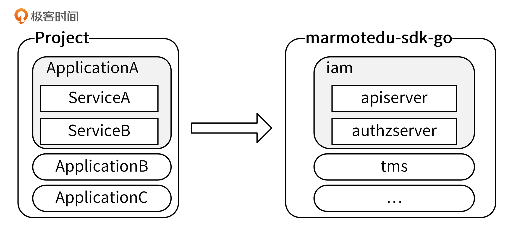
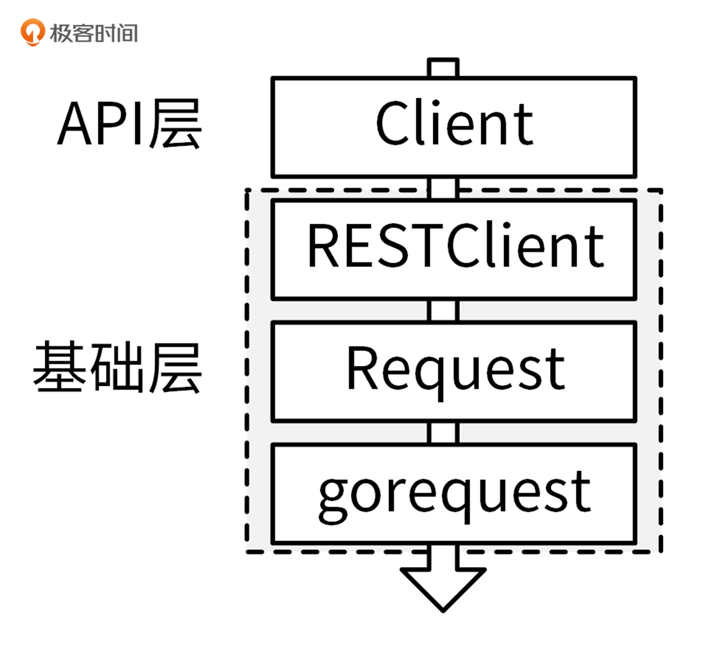

- 00 开篇词 从 0 开始搭建一个企业级 Go 应用.md.html
- 01 IAM系统概述：我们要实现什么样的 Go 项目？.md.html
- 02 环境准备：如何安装和配置一个基本的 Go 开发环境？.md.html
- 03 项目部署：如何快速部署 IAM 系统？.md.html
- 04 规范设计（上）：项目开发杂乱无章，如何规范？.md.html
- 05 规范设计（下）：commit 信息风格迥异、难以阅读，如何规范？.md.html
- 06 目录结构设计：如何组织一个可维护、可扩展的代码目录？.md.html
- 07 工作流设计：如何设计合理的多人开发模式？.md.html
- 08 研发流程设计（上）：如何设计 Go 项目的开发流程？.md.html
- 09 研发流程设计（下）：如何管理应用的生命周期？.md.html
- 10 设计方法：怎么写出优雅的 Go 项目？.md.html
- 11 设计模式：Go常用设计模式概述.md.html
- 12 API 风格（上）：如何设计RESTful API？.md.html
- 13 API 风格（下）：RPC API介绍.md.html
- 14 项目管理：如何编写高质量的Makefile？.md.html
- 15 研发流程实战：IAM项目是如何进行研发流程管理的？.md.html
- 16 代码检查：如何进行静态代码检查？.md.html
- 17 API 文档：如何生成 Swagger API 文档 ？.md.html
- 18 错误处理（上）：如何设计一套科学的错误码？.md.html
- 19 错误处理（下）：如何设计错误包？.md.html
- 20 日志处理（上）：如何设计日志包并记录日志？.md.html
- 21 日志处理（下）：手把手教你从 0 编写一个日志包.md.html
- 22 应用构建三剑客：Pflag、Viper、Cobra 核心功能介绍.md.html
- 23 应用构建实战：如何构建一个优秀的企业应用框架？.md.html
- 24 Web 服务：Web 服务核心功能有哪些，如何实现？.md.html
- 25 认证机制：应用程序如何进行访问认证？.md.html
- 26 IAM项目是如何设计和实现访问认证功能的？.md.html
- 27 权限模型：5大权限模型是如何进行资源授权的？.md.html
- 28 控制流（上）：通过iam-apiserver设计，看Web服务的构建.md.html
- 29 控制流（下）：iam-apiserver服务核心功能实现讲解.md.html
- 30 ORM：CURD 神器 GORM 包介绍及实战.md.html
- 31 数据流：通过iam-authz-server设计，看数据流服务的设计.md.html
- 32 数据处理：如何高效处理应用程序产生的数据？.md.html
- 33 SDK 设计（上）：如何设计出一个优秀的 Go SDK？.md.html
- 34 SDK 设计（下）：IAM项目Go SDK设计和实现.md.html
- 35 效率神器：如何设计和实现一个命令行客户端工具？.md.html
- 36 代码测试（上）：如何编写 Go 语言单元测试和性能测试用例？.md.html
- 37 代码测试（下）：Go 语言其他测试类型及 IAM 测试介绍.md.html
- 38 性能分析（上）：如何分析 Go 语言代码的性能？.md.html
- 39 性能分析（下）：API Server性能测试和调优实战.md.html
- 40 软件部署实战（上）：部署方案及负载均衡、高可用组件介绍.md.html
- 41 软件部署实战（中）：IAM 系统生产环境部署实战.md.html
- 42 软件部署实战（下）：IAM系统安全加固、水平扩缩容实战.md.html
- 43 技术演进（上）：虚拟化技术演进之路.md.html
- 44 技术演进（下）：软件架构和应用生命周期技术演进之路.md.html
- 45 基于Kubernetes的云原生架构设计.md.html
- 46 如何制作Docker镜像？.md.html
- 47 如何编写Kubernetes资源定义文件？.md.html
- 48 IAM 容器化部署实战.md.html
- 49 服务编排（上）：Helm服务编排基础知识.md.html
- 50 服务编排（下）：基于Helm的服务编排部署实战.md.html
- 51 基于 GitHub Actions 的 CI 实战.md.html
- 特别放送 Go Modules依赖包管理全讲.md.html
- 特别放送 Go Modules实战.md.html
- 特别放送 IAM排障指南.md.html
- 特别放送 分布式作业系统设计和实现.md.html
- 特别放送 给你一份Go项目中最常用的Makefile核心语法.md.html
- 特别放送 给你一份清晰、可直接套用的Go编码规范.md.html
- 直播加餐 如何从小白进阶成 Go 语言专家？.md.html
- 结束语 如何让自己的 Go 研发之路走得更远？.md.html
- 捐赠
34 SDK 设计（下）：IAM项目Go SDK设计和实现
你好，我是孔令飞。
上一讲，我介绍了公有云厂商普遍采用的SDK设计方式。其实，还有一些比较优秀的SDK设计方式，比如 Kubernetes的 client-go SDK设计方式。IAM项目参考client-go，也实现了client-go风格的SDK：marmotedu-sdk-go。
和 33讲 介绍的SDK设计方式相比，client-go风格的SDK具有以下优点：
- 大量使用了Go interface特性，将接口的定义和实现解耦，可以支持多种实现方式。
- 接口调用层级跟资源的层级相匹配，调用方式更加友好。
- 多版本共存。
所以，我更推荐你使用marmotedu-sdk-go。接下来，我们就来看下marmotedu-sdk-go是如何设计和实现的。
marmotedu-sdk-go设计
和medu-sdk-go相比，marmotedu-sdk-go的设计和实现要复杂一些，但功能更强大，使用体验也更好。
这里，我们先来看一个使用SDK调用iam-authz-server /v1/authz 接口的示例，代码保存在 marmotedu-sdk-go/examples/authz_clientset/main.go文件中：
package main
import (
"context"
"flag"
"fmt"
"path/filepath"
"github.com/ory/ladon"
metav1 "github.com/marmotedu/component-base/pkg/meta/v1"
"github.com/marmotedu/component-base/pkg/util/homedir"
"github.com/marmotedu/marmotedu-sdk-go/marmotedu"
"github.com/marmotedu/marmotedu-sdk-go/tools/clientcmd"
)
func main() {
var iamconfig *string
if home := homedir.HomeDir(); home != "" {
iamconfig = flag.String(
"iamconfig",
filepath.Join(home, ".iam", "config"),
"(optional) absolute path to the iamconfig file",
)
} else {
iamconfig = flag.String("iamconfig", "", "absolute path to the iamconfig file")
}
flag.Parse()
// use the current context in iamconfig
config, err := clientcmd.BuildConfigFromFlags("", *iamconfig)
if err != nil {
panic(err.Error())
}
// create the clientset
clientset, err := marmotedu.NewForConfig(config)
if err != nil {
panic(err.Error())
}
request := &ladon.Request{
Resource: "resources:articles:ladon-introduction",
Action: "delete",
Subject: "users:peter",
Context: ladon.Context{
"remoteIP": "192.168.0.5",
},
}
// Authorize the request
fmt.Println("Authorize request...")
ret, err := clientset.Iam().AuthzV1().Authz().Authorize(context.TODO(), request, metav1.AuthorizeOptions{})
if err != nil {
panic(err.Error())
}
fmt.Printf("Authorize response: %s.\n", ret.ToString())
}
在上面的代码示例中，包含了下面的操作。
- 首先，调用
BuildConfigFromFlags函数，创建出SDK的配置实例config； - 接着，调用
marmotedu.NewForConfig(config)创建了IAM项目的客户端clientset; - 最后，调用以下代码请求
/v1/authz接口执行资源授权请求：
ret, err := clientset.Iam().AuthzV1().Authz().Authorize(context.TODO(), request, metav1.AuthorizeOptions{})
if err != nil {
panic(err.Error())
}
fmt.Printf("Authorize response: %s.\n", ret.ToString())
调用格式为项目客户端.应用客户端.服务客户端.资源名.接口 。
所以，上面的代码通过创建项目级别的客户端、应用级别的客户端和服务级别的客户端，来调用资源的API接口。接下来，我们来看下如何创建这些客户端。
marmotedu-sdk-go客户端设计
在讲客户端创建之前，我们先来看下客户端的设计思路。
Go项目的组织方式是有层级的：Project -> Application -> Service。marmotedu-sdk-go很好地体现了这种层级关系，使得SDK的调用更加易懂、易用。marmotedu-sdk-go的层级关系如下图所示：

marmotedu-sdk-go定义了3类接口，分别代表了项目、应用和服务级别的API接口：
// 项目级别的接口
type Interface interface {
Iam() iam.IamInterface
Tms() tms.TmsInterface
}
// 应用级别的接口
type IamInterface interface {
APIV1() apiv1.APIV1Interface
AuthzV1() authzv1.AuthzV1Interface
}
// 服务级别的接口
type APIV1Interface interface {
RESTClient() rest.Interface
SecretsGetter
UsersGetter
PoliciesGetter
}
// 资源级别的客户端
type SecretsGetter interface {
Secrets() SecretInterface
}
// 资源的接口定义
type SecretInterface interface {
Create(ctx context.Context, secret *v1.Secret, opts metav1.CreateOptions) (*v1.Secret, error)
Update(ctx context.Context, secret *v1.Secret, opts metav1.UpdateOptions) (*v1.Secret, error)
Delete(ctx context.Context, name string, opts metav1.DeleteOptions) error
DeleteCollection(ctx context.Context, opts metav1.DeleteOptions, listOpts metav1.ListOptions) error
Get(ctx context.Context, name string, opts metav1.GetOptions) (*v1.Secret, error)
List(ctx context.Context, opts metav1.ListOptions) (*v1.SecretList, error)
SecretExpansion
}
Interface 代表了项目级别的接口，里面包含了 Iam 和 Tms 两个应用； IamInterface 代表了应用级别的接口，里面包含了api（iam-apiserver）和authz（iam-authz-server）两个服务级别的接口。api和authz服务中，又包含了各自服务中REST资源的CURD接口。
marmotedu-sdk-go通过 XxxV1 这种命名方式来支持不同版本的API接口，好处是可以在程序中同时调用同一个API接口的不同版本，例如：
clientset.Iam().AuthzV1().Authz().Authorize() 、clientset.Iam().AuthzV2().Authz().Authorize() 分别调用了 /v1/authz 和 /v2/authz 两个版本的API接口。
上述关系也可以从目录结构中反映出来，marmotedu-sdk-go目录设计如下（只列出了一些重要的文件）：
├── examples # 存放SDK的使用示例
├── Makefile # 管理SDK源码，静态代码检查、代码格式化、测试、添加版权信息等
├── marmotedu
│ ├── clientset.go # clientset实现，clientset中包含多个应用，多个服务的API接口
│ ├── fake # clientset的fake实现，主要用于单元测试
│ └── service # 按应用进行分类，存放应用中各服务API接口的具体实现
│ ├── iam # iam应用的API接口实现，包含多个服务
│ │ ├── apiserver # iam应用中，apiserver服务的API接口，包含多个版本
│ │ │ └── v1 # apiserver v1版本API接口
│ │ ├── authz # iam应用中，authz服务的API接口
│ │ │ └── v1 # authz服务v1版本接口
│ │ └── iam_client.go # iam应用的客户端，包含了apiserver和authz 2个服务的客户端
│ └── tms # tms应用的API接口实现
├── pkg # 存放一些共享包，可对外暴露
├── rest # HTTP请求的底层实现
├── third_party # 存放修改过的第三方包，例如：gorequest
└── tools
└── clientcmd # 一些函数用来帮助创建rest.Config配置
每种类型的客户端，都可以通过以下相似的方式来创建：
config, err := clientcmd.BuildConfigFromFlags("", "/root/.iam/config")
clientset, err := xxxx.NewForConfig(config)
/root/.iam/config 为配置文件，里面包含了服务的地址和认证信息。BuildConfigFromFlags 函数加载配置文件，创建并返回 rest.Config 类型的配置变量，并通过 xxxx.NewForConfig 函数创建需要的客户端。xxxx 是所在层级的client包，例如 iam、tms。
marmotedu-sdk-go客户端定义了3类接口，这可以带来两个好处。
第一，API接口调用格式规范，层次清晰，可以使API接口调用更加清晰易记。
第二，可以根据需要，自行选择客户端类型，调用灵活。举个例子，在A服务中需要同时用到iam-apiserver 和 iam-authz-server提供的接口，就可以创建应用级别的客户端IamClient，然后通过 iamclient.APIV1() 和 iamclient.AuthzV1() ，来切换调用不同服务的API接口。
接下来，我们来看看如何创建三个不同级别的客户端。
项目级别客户端创建
Interface 对应的客户端实现为Clientset，所在的包为 marmotedu-sdk-go/marmotedu，Clientset客户端的创建方式为：
config, err := clientcmd.BuildConfigFromFlags("", "/root/.iam/config")
clientset, err := marmotedu.NewForConfig(config)
调用方式为 clientset.应用.服务.资源名.接口 ，例如：
rsp, err := clientset.Iam().AuthzV1().Authz().Authorize()
参考示例为 marmotedu-sdk-go/examples/authz_clientset/main.go。
应用级别客户端创建
IamInterface 对应的客户端实现为IamClient，所在的包为 marmotedu-sdk-go/marmotedu/service/iam，IamClient客户端的创建方式为：
config, err := clientcmd.BuildConfigFromFlags("", "/root/.iam/config")
iamclient,, err := iam.NewForConfig(config)
调用方式为 iamclient.服务.资源名.接口 ，例如：
rsp, err := iamclient.AuthzV1().Authz().Authorize()
参考示例为 marmotedu-sdk-go/examples/authz_iam/main.go。
服务级别客户端创建
AuthzV1Interface 对应的客户端实现为AuthzV1Client，所在的包为 marmotedu-sdk-go/marmotedu/service/iam/authz/v1，AuthzV1Client客户端的创建方式为：
config, err := clientcmd.BuildConfigFromFlags("", "/root/.iam/config")
client, err := v1.NewForConfig(config)
调用方式为 client.资源名.接口 ，例如：
rsp, err := client.Authz().Authorize()
参考示例为 marmotedu-sdk-go/examples/authz/main.go。
上面我介绍了marmotedu-sdk-go的客户端创建方法，接下来我们再来看下，这些客户端具体是如何执行REST API请求的。
marmotedu-sdk-go的实现
marmotedu-sdk-go的实现和medu-sdk-go一样，也是采用分层结构，分为API层和基础层。如下图所示：

RESTClient是整个SDK的核心，RESTClient向下通过调用Request模块，来完成HTTP请求方法、请求路径、请求体、认证信息的构建。Request模块最终通过调用gorequest包提供的方法，完成HTTP的POST、PUT、GET、DELETE等请求，获取HTTP返回结果，并解析到指定的结构体中。RESTClient向上提供 Post() 、 Put() 、 Get() 、 Delete() 等方法来供客户端完成HTTP请求。
marmotedu-sdk-go提供了两类客户端，分别是RESTClient客户端和基于RESTClient封装的客户端。
- RESTClient：Raw类型的客户端，可以通过指定HTTP的请求方法、请求路径、请求参数等信息，直接发送HTTP请求，例如
client.Get().AbsPath("/version").Do().Into()。 - 基于RESTClient封装的客户端：例如AuthzV1Client、APIV1Client等，执行特定REST资源、特定API接口的请求，方便开发者调用。
接下来，我们具体看下如何创建RESTClient客户端，以及Request模块的实现。
RESTClient客户端实现
我通过下面两个步骤，实现了RESTClient客户端。
第一步，创建rest.Config类型的变量。
BuildConfigFromFlags函数通过加载yaml格式的配置文件，来创建 rest.Config 类型的变量，加载的yaml格式配置文件内容为：
apiVersion: v1
user:
#token: # JWT Token
username: admin # iam 用户名
password: Admin@2020 # iam 密码
#secret-id: # 密钥 ID
#secret-key: # 密钥 Key
client-certificate: /home/colin/.iam/cert/admin.pem # 用于 TLS 的客户端证书文件路径
client-key: /home/colin/.iam/cert/admin-key.pem # 用于 TLS 的客户端 key 文件路径
#client-certificate-data:
#client-key-data:
server:
address: https://127.0.0.1:8443 # iam api-server 地址
timeout: 10s # 请求 api-server 超时时间
#max-retries: # 最大重试次数，默认为 0
#retry-interval: # 重试间隔，默认为 1s
#tls-server-name: # TLS 服务器名称
#insecure-skip-tls-verify: # 设置为 true 表示跳过 TLS 安全验证模式，将使得 HTTPS 连接不安全
certificate-authority: /home/colin/.iam/cert/ca.pem # 用于 CA 授权的 cert 文件路径
#certificate-authority-data:
在配置文件中，我们可以指定服务的地址、用户名/密码、密钥、TLS证书、超时时间、重试次数等信息。
创建方法如下：
config, err := clientcmd.BuildConfigFromFlags("", *iamconfig)
if err != nil {
panic(err.Error())
}
这里的代码中，*iamconfig 是yaml格式的配置文件路径。BuildConfigFromFlags 函数中，调用LoadFromFile函数来解析yaml配置文件。LoadFromFile最终是通过 yaml.Unmarshal 的方式来解析yaml格式的配置文件的。
第二步，根据rest.Config类型的变量，创建RESTClient客户端。
通过RESTClientFor函数来创建RESTClient客户端：
func RESTClientFor(config *Config) (*RESTClient, error) {
...
baseURL, versionedAPIPath, err := defaultServerURLFor(config)
if err != nil {
return nil, err
}
// Get the TLS options for this client config
tlsConfig, err := TLSConfigFor(config)
if err != nil {
return nil, err
}
// Only retry when get a server side error.
client := gorequest.New().TLSClientConfig(tlsConfig).Timeout(config.Timeout).
Retry(config.MaxRetries, config.RetryInterval, http.StatusInternalServerError)
// NOTICE: must set DoNotClearSuperAgent to true, or the client will clean header befor http.Do
client.DoNotClearSuperAgent = true
...
clientContent := ClientContentConfig{
Username: config.Username,
Password: config.Password,
SecretID: config.SecretID,
SecretKey: config.SecretKey,
...
}
return NewRESTClient(baseURL, versionedAPIPath, clientContent, client)
}
RESTClientFor函数调用defaultServerURLFor(config)生成基本的HTTP请求路径：baseURL=http://127.0.0.1:8080，versionedAPIPath=/v1。然后，通过[TLSConfigFor](https://github.com/marmotedu/marmotedu-sdk-go/blob/v1.0.2/rest/config.go#L241-L298)函数生成TLS配置，并调用 gorequest.New() 创建gorequest客户端，将客户端配置信息保存在变量中。最后，调用NewRESTClient函数创建RESTClient客户端。
RESTClient客户端提供了以下方法，来供调用者完成HTTP请求：
func (c *RESTClient) APIVersion() scheme.GroupVersion
func (c *RESTClient) Delete() *Request
func (c *RESTClient) Get() *Request
func (c *RESTClient) Post() *Request
func (c *RESTClient) Put() *Request
func (c *RESTClient) Verb(verb string) *Request
可以看到，RESTClient提供了 Delete 、 Get 、 Post 、 Put 方法，分别用来执行HTTP的DELETE、GET、POST、PUT方法，提供的 Verb 方法可以灵活地指定HTTP方法。这些方法都返回了 Request 类型的变量。Request 类型的变量提供了一些方法，用来完成具体的HTTP请求，例如：
type Response struct {
Allowed bool `json:"allowed"`
Denied bool `json:"denied,omitempty"`
Reason string `json:"reason,omitempty"`
Error string `json:"error,omitempty"`
}
func (c *authz) Authorize(ctx context.Context, request *ladon.Request, opts metav1.AuthorizeOptions) (result *Response, err error) {
result = &Response{}
err = c.client.Post().
Resource("authz").
VersionedParams(opts).
Body(request).
Do(ctx).
Into(result)
return
}
上面的代码中， c.client 是RESTClient客户端，通过调用RESTClient客户端的 Post 方法，返回了 *Request 类型的变量。
*Request 类型的变量提供了 Resource 和 VersionedParams 方法，来构建请求HTTP URL中的路径 /v1/authz ；通过 Body 方法，指定了HTTP请求的Body。
到这里，我们分别构建了HTTP请求需要的参数：HTTP Method、请求URL、请求Body。所以，之后就可以调用 Do 方法来执行HTTP请求，并将返回结果通过 Into 方法保存在传入的result变量中。
Request模块实现
RESTClient客户端的方法会返回Request类型的变量，Request类型的变量提供了一系列的方法用来构建HTTP请求参数，并执行HTTP请求。
所以，Request模块可以理解为最底层的通信层，我们来看下Request模块具体是如何完成HTTP请求的。
我们先来看下Request结构体的定义：
type RESTClient struct {
// base is the root URL for all invocations of the client
base *url.URL
// group stand for the client group, eg: iam.api, iam.authz
group string
// versionedAPIPath is a path segment connecting the base URL to the resource root
versionedAPIPath string
// content describes how a RESTClient encodes and decodes responses.
content ClientContentConfig
Client *gorequest.SuperAgent
}
type Request struct {
c *RESTClient
timeout time.Duration
// generic components accessible via method setters
verb string
pathPrefix string
subpath string
params url.Values
headers http.Header
// structural elements of the request that are part of the IAM API conventions
// namespace string
// namespaceSet bool
resource string
resourceName string
subresource string
// output
err error
body interface{}
}
再来看下Request结构体提供的方法：
func (r *Request) AbsPath(segments ...string) *Request
func (r *Request) Body(obj interface{}) *Request
func (r *Request) Do(ctx context.Context) Result
func (r *Request) Name(resourceName string) *Request
func (r *Request) Param(paramName, s string) *Request
func (r *Request) Prefix(segments ...string) *Request
func (r *Request) RequestURI(uri string) *Request
func (r *Request) Resource(resource string) *Request
func (r *Request) SetHeader(key string, values ...string) *Request
func (r *Request) SubResource(subresources ...string) *Request
func (r *Request) Suffix(segments ...string) *Request
func (r *Request) Timeout(d time.Duration) *Request
func (r *Request) URL() *url.URL
func (r *Request) Verb(verb string) *Request
func (r *Request) VersionedParams(v interface{}) *Request
通过Request结构体的定义和使用方法，我们不难猜测出：Request模块通过 Name 、 Resource 、 Body 、 SetHeader 等方法来设置Request结构体中的各个字段。这些字段最终用来构建出一个HTTP请求，并通过 Do 方法来执行HTTP请求。
那么，如何构建并执行一个HTTP请求呢？我们可以通过以下5步，来构建并执行HTTP请求：
- 构建HTTP URL；
- 构建HTTP Method；
- 构建HTTP Body；
- 执行HTTP请求；
- 保存HTTP返回结果。
接下来，我们就来具体看下Request模块是如何构建这些请求参数，并发送HTTP请求的。
第一步，构建HTTP URL。
首先，通过defaultServerURLFor函数返回了http://iam.api.marmotedu.com:8080 和 /v1 ，并将二者分别保存在了Request类型结构体变量中 c 字段的 base 字段和 versionedAPIPath 字段中。
通过 Do 方法执行HTTP时，会调用r.URL()方法来构建请求URL。 r.URL 方法中，通过以下代码段构建了HTTP请求URL：
func (r *Request) URL() *url.URL {
p := r.pathPrefix
if len(r.resource) != 0 {
p = path.Join(p, strings.ToLower(r.resource))
}
if len(r.resourceName) != 0 || len(r.subpath) != 0 || len(r.subresource) != 0 {
p = path.Join(p, r.resourceName, r.subresource, r.subpath)
}
finalURL := &url.URL{}
if r.c.base != nil {
*finalURL = *r.c.bas
}
finalURL.Path = p
...
}
p := r.pathPrefix 和 r.c.base ，是通过 defaultServerURLFor 调用返回的 v1 和 http://iam.api.marmotedu.com:8080 来构建的。
resourceName 通过 func (r *Request) Resource(resource string) *Request 来指定，例如 authz 。
所以，最终我们构建的请求URL为 http://iam.api.marmotedu.com:8080/v1/authz 。
第二步，构建HTTP Method。
HTTP Method通过RESTClient提供的 Post 、Delete 、Get 等方法来设置，例如：
func (c *RESTClient) Post() *Request {
return c.Verb("POST")
}
func (c *RESTClient) Verb(verb string) *Request {
return NewRequest(c).Verb(verb)
}
NewRequest(c).Verb(verb) 最终设置了Request结构体的 verb 字段，供 Do 方法使用。
第三步，构建HTTP Body。
HTTP Body通过Request结构体提供的Body方法来指定：
func (r *Request) Body(obj interface{}) *Request {
if v := reflect.ValueOf(obj); v.Kind() == reflect.Struct {
r.SetHeader("Content-Type", r.c.content.ContentType)
}
r.body = obj
return r
}
第四步，执行HTTP请求。
通过Request结构体提供的Do方法来执行具体的HTTP请求，代码如下：
func (r *Request) Do(ctx context.Context) Result {
client := r.c.Client
client.Header = r.headers
if r.timeout > 0 {
var cancel context.CancelFunc
ctx, cancel = context.WithTimeout(ctx, r.timeout)
defer cancel()
}
client.WithContext(ctx)
resp, body, errs := client.CustomMethod(r.verb, r.URL().String()).Send(r.body).EndBytes()
if err := combineErr(resp, body, errs); err != nil {
return Result{
response: &resp,
err: err,
body: body,
}
}
decoder, err := r.c.content.Negotiator.Decoder()
if err != nil {
return Result{
response: &resp,
err: err,
body: body,
decoder: decoder,
}
}
return Result{
response: &resp,
body: body,
decoder: decoder,
}
}
在Do方法中，使用了Request结构体变量中各个字段的值，通过 client.CustomMethod 来执行HTTP请求。 client 是 *gorequest.SuperAgent 类型的客户端。
第五步，保存HTTP返回结果。
通过Request结构体的 Into 方法来保存HTTP返回结果：
func (r Result) Into(v interface{}) error {
if r.err != nil {
return r.Error()
}
if r.decoder == nil {
return fmt.Errorf("serializer doesn't exist")
}
if err := r.decoder.Decode(r.body, &v); err != nil {
return err
}
return nil
}
r.body 是在Do方法中，执行完HTTP请求后设置的，它的值为HTTP请求返回的Body。
请求认证
接下来，我再来介绍下marmotedu-sdk-go另外一个比较核心的功能：请求认证。
marmotedu-sdk-go支持两种认证方式：
- Basic认证：通过给请求添加
Authorization: Basic xxxx来实现。 - Bearer认证：通过给请求添加
Authorization: Bearer xxxx来实现。这种方式又支持直接指定JWT Token，或者通过指定密钥对由SDK自动生成JWT Token。
Basic认证和Bearer认证，我在 25讲介绍过，你可以返回查看下。
认证头是RESTClient客户端发送HTTP请求时指定的，具体实现位于NewRequest函数中：
switch {
case c.content.HasTokenAuth():
r.SetHeader("Authorization", fmt.Sprintf("Bearer %s", c.content.BearerToken))
case c.content.HasKeyAuth():
tokenString := auth.Sign(c.content.SecretID, c.content.SecretKey, "marmotedu-sdk-go", c.group+".marmotedu.com")
r.SetHeader("Authorization", fmt.Sprintf("Bearer %s", tokenString))
case c.content.HasBasicAuth():
// TODO: get token and set header
r.SetHeader("Authorization", "Basic "+basicAuth(c.content.Username, c.content.Password))
}
上面的代码会根据配置信息，自动判断使用哪种认证方式。
总结
这一讲中，我介绍了Kubernetes client-go风格的SDK实现方式。和公有云厂商的SDK设计相比，client-go风格的SDK设计有很多优点。
marmotedu-sdk-go在设计时，通过接口实现了3类客户端，分别是项目级别的客户端、应用级别的客户端和服务级别的客户端。开发人员可以根据需要，自行创建客户端类型。
marmotedu-sdk-go通过RESTClientFor，创建了RESTClient类型的客户端，RESTClient向下通过调用Request模块，来完成HTTP请求方法、请求路径、请求体、认证信息的构建。Request模块最终通过调用gorequest包提供的方法，完成HTTP的POST、PUT、GET、DELETE等请求，获取HTTP返回结果，并解析到指定的结构体中。RESTClient向上提供 Post() 、 Put() 、 Get() 、 Delete() 等方法，来供客户端完成HTTP请求。
课后练习
- 阅读defaultServerURLFor源码，思考下defaultServerURLFor是如何构建请求地址
http://iam.api.marmotedu.com:8080和API版本/v1的。 - 使用gorequest包，编写一个可以执行以下HTTP请求的示例：
curl -XPOST http://example.com/v1/user -d '{"username":"colin","address":"shenzhen"}'
欢迎你在留言区与我交流讨论，我们下一讲见。
© 2019 - 2023 Liangliang Lee. Powered by gin and hexo-theme-book.